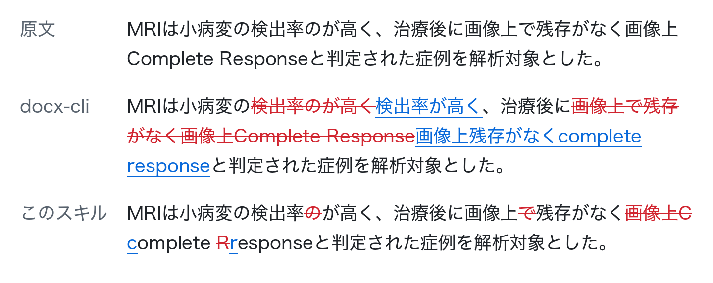

docx-redline-ja
AIが出した日本語の校正結果を、Wordの変更履歴として原稿に書き込むスキルです。差分を文字単位で取るので、変更履歴に残るのは実際に変わった文字だけです。

日本語の校正で何が困るのか
ClaudeなどのAIに原稿を校正させると、指摘はチャットの文章で返ってきます。Wordで1件ずつ探して直すのは手間で、どこを直したのかも後から分からなくなります。
指摘をWordの変更履歴として入れるツールはいくつかありますが、多くは英語のように単語の間に空白がある言語を前提にしています。日本語の文は句読点までの一続きが1つの単語として扱われ、1文字直しただけでもその全体が削除と挿入になります。これでは、どこを直したのかが読み取れません。
docx-redline-jaは差分を文字単位で取ります。変更履歴は変わった文字だけに付くので、Wordの校閲画面で修正を1件ずつ確かめて、承諾または却下できます。
できること
- 「どの文字列を何に直すか」を1行1件で並べたJSONLを読み、原稿docxの別コピーにWordの変更履歴として書き込みます。元の原稿は書き換えません。
- 書き出す前に、変更履歴をすべて却下すると原文に戻るか、他の人が入れた変更履歴を壊していないかを確かめます。1つでも通らなければファイルを書き出しません。
- 直す箇所が原稿の中に複数あって決められない指摘は、適用せずに理由とともに返します。
- 表のセルとテキストボックスの中も編集できます。文献番号などの上付き・下付きも扱えます。
- 必要なのはPython 3.11以降と
lxmlだけです。処理は手元で行い、このツールが文書を外部に送ることはありません。
ベンチマーク：費用とトークン
Claude Code（Sonnet 5.5）に40段落の原稿と20件の修正指示を渡し、変更履歴を入れたdocxを作らせました。値は3回の平均です。
| 言語 | 使った道具 | 費用（USD） | 入力トークン | 変更履歴の文字数 |
|---|---|---|---|---|
| 日本語 | このスキル | 0.060 | 51,933 | 最小の1.0倍 |
| 日本語 | なし（モデル単独） | 0.068 | 70,370 | 1.0倍 |
| 日本語 | Anthropicのdocxスキル | 0.079 | 74,055 | 1.0倍 |
| 日本語 | docx-cli | 0.080 | 92,508 | 28.1倍 |
| 英語 | このスキル | 0.060 | 56,726 | 1.0倍 |
| 英語 | なし（モデル単独） | 0.096 | 86,113 | 1.1倍 |
このスキルは日英とも、費用とトークンが比べた4つの中で最も少なくなりました。モデル単独と比べると、費用は日本語で12%、英語で37%少なくなっています。全体の表と方法はREADMEにあります。
導入
Claude Code
/plugin marketplace add akchan/docx-redline-ja
/plugin install docx-redline-ja@docx-redline-jaCodex CLI
codex plugin marketplace add akchan/docx-redline-ja
codex plugin add docx-redline-ja@docx-redline-jaClaude Desktop（Cowork）
サイドバーの「Customize」から「Plugins」を開き、「Add marketplace」でakchan/docx-redline-jaを追加して、docx-redline-jaを「Install」します。
使い方
導入したら、エージェントにこう頼みます。
manuscript.docxを校正して、指摘をfindings.jsonlにまとめてから、docx-redline-jaで変更履歴として入れて指摘は1行に1件のJSONLです。スクリプトを直接動かすこともできます。
{"old_text":"所見がみられか？","new_text":"所見がみられるか？"}
python3 plugins/docx-redline-ja/skills/docx-redline-ja/scripts/apply_redline.py \
--docx manuscript.docx --findings findings.jsonl --out reviewed.docxできないこと
- 校正そのものはしません。何を直すかを決めるのはエージェントか人で、このスキルはその結果を書き込むだけです。
- 編集するのは本文の段落だけで、コメント、ヘッダー・フッター、脚注は対象外です。
- 1つの修正は1段落の中に収まるものだけを扱います。
- コメントを付ける機能はありません。